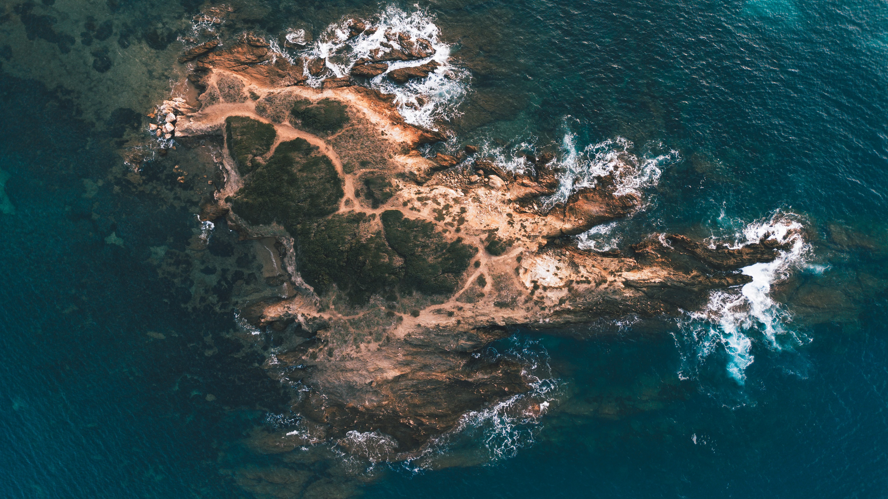
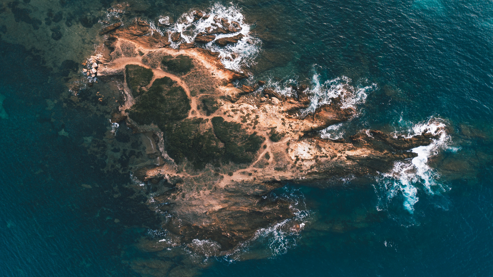
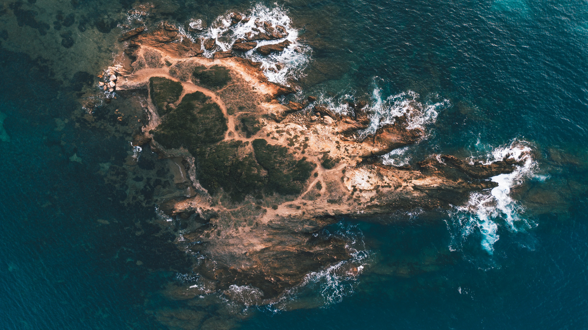

Land & Sea
Since 2023, I've been exploring the world from above, capturing landscapes I thought I knew in a new dimension.
 


Since 2023, I've been exploring the world from above, capturing landscapes I thought I knew in a new dimension.
